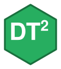

Authors and Citation
Authors
-
SpryMedia Ltd. Copyright holder.
Bundled 'DataTables' 2.3.4 and its extensions Buttons 3.2.5, ColReorder 2.1.1, ColumnControl 1.1.0, DateTime 1.6.0, FixedColumns 5.0.5, FixedHeader 4.0.3, KeyTable 2.12.1, Responsive 3.0.6, RowGroup 1.6.0, RowReorder 1.5.0, Scroller 2.4.3, SearchBuilder 1.8.4, SearchPanes 2.3.5, Select 3.1.0 and StateRestore 1.4.2 -
OpenJS Foundation and other contributors. Copyright holder.
Bundled 'jQuery' 3.7.0 -
The Bootstrap Authors. Copyright holder.
Bundled 'Bootstrap' 5.3.8 -
Federico Zivolo. Copyright holder.
'Popper', included in the bundled 'Bootstrap' 5.3.8 -
bpampuch. Copyright holder.
Bundled 'pdfmake' 0.2.7 -
liborm85. Copyright holder.
Bundled 'pdfmake' 0.2.7 -
Google Inc.. Copyright holder.
'Roboto' fonts embedded in the bundled 'pdfmake' 0.2.7 (Apache-2.0) -
Stuart Knightley. Copyright holder.
Bundled 'JSZip' 3.10.1 -
David Duponchel. Copyright holder.
Bundled 'JSZip' 3.10.1 -
Franz Buchinger. Copyright holder.
Bundled 'JSZip' 3.10.1 -
António Afonso. Copyright holder.
Bundled 'JSZip' 3.10.1 -
Vitaly Puzrin. Copyright holder.
'pako', included in the bundled 'JSZip' 3.10.1 -
Andrei Tuputcyn. Copyright holder.
'pako', included in the bundled 'JSZip' 3.10.1 -
JS Foundation and other contributors. Copyright holder.
Bundled 'Moment.js' 2.29.4 -
Eli Grey. Copyright holder.
'FileSaver.js' 1.3.3, included in the bundled 'DataTables' Buttons -
Lucide Contributors. Copyright holder.
'Lucide' icons, included in the bundled 'DataTables' ColumnControl -
Cole Bemis. Copyright holder.
'Feather' icons, part of 'Lucide', included in the bundled 'DataTables' ColumnControl
Citation
Source: DESCRIPTION
Leite A, Wasiliew M, Vasconcelos H, Amorim C, Bezerra D, Nascimento Barreto J (2026). DT2: 'DataTables' 2.x for R. R package version 0.1.3, https://github.com/StrategicProjects/DT2.
@Manual{,
title = {DT2: 'DataTables' 2.x for R},
author = {André Leite and Marcos Wasiliew and Hugo Vasconcelos and Carlos Amorim and Diogo Bezerra and Júlia {Nascimento Barreto}},
year = {2026},
note = {R package version 0.1.3},
url = {https://github.com/StrategicProjects/DT2},
}